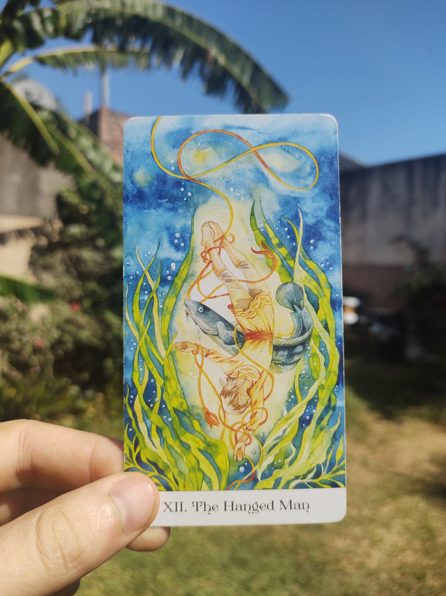

¿Quién soy?
Juan Pablo Alberini
Tengo 23 años, soy de San Justo, Santa Fe, Argentina y desde hace un tiempo me especializo en el tarot desde un enfoque terapéutico ayudando de forma privada a las personas a resolver sus problemas personales. Diariamente realizo sesiones, las cuales reciben de mi ayuda profesional. Estos últimos años he tenido todo tipo de consultantes con sus situaciones particulares que me han hecho tener cada vez más confianza y seguridad y me han sumaron experiencia. Hoy me siento muy preparado para atender cualquier tipo de consultante con su situación personal.
Estudio el tarot hace tres años y desde hace dos atiendo a las personas de manera privada. El interés en el tarot empezó en mi por que antes de el me gustaba la astrología, y una cosa me llevo a la otra. En el tarot encontré algo que la astrología, no es que no lo iba a encontrar, pero sí, me iba a llevar mas tiempo. Igualmente algunas cosas que aprendí de la astrología hoy en dia las uso; como el signo de la persona muchas veces es un dato de gran importancia en la lectura de tarot y a veces te hace entender ciertas cosas. En el tarot encontre que estudiando 78 significados (78 cartas) ya podia empezar a tirar las cartas, luego faltaba práctica y mucha intuición, que es un factor super importante. Descubrí en el tarot que podia ayudar a otras personas de manera rapida y concreta y sin necesitar información previa sobre ellas.
El tarot te lleva a lo importante, a lo que hay que tratar/hablar, te lleva al grano, o bien, uno puede decidir de que hablar, sino el tarot se encarga. Vi tanto poder en un maso de cartas y tanta utilidad que lo comenzé a estudiar y a practicar. Las primeras sesiones las realiza gratis, y observaba en las personas que les hacia sumamente bien, desde ese momento sentí que era necesario para mi empezar a cobrar. Sentia que las personas se iban con demaciado y yo me iba sin nada. Por otro lado la primera lectura que realice desde el desconocimiento fue sobre la muerte de una persona, la cual acerté. Eso me pasó por no saber lo que estaba haciendo.
Hoy tengo claro que la utilidad del tarot predictivo es muy poca y es capaz de hacer mucho daño. Yo me dedico al tarot terapéutico, que puede sonar un poco aburrido, pero cuando te haces una sesión, cambias de opinión. Esto es por que el tarot terapéutico tiene una gran parte adivinatoria, y esa es la parte mas interesante. Otra cosa que es importante es que las cosas que se adivinan son sobre el presente y en general sobre el consultante, también es verdad que a veces se llega a consultar sobre terceras personas.
Creo que el tarot terapéutico te hace las cosas mas faciles, te da claridad, te simplifica, haces conciencia y ademas te da mucha información para que puedes sobre llevar y solucionar tus problemas.

Sesión personal
Las sesiones privadas se realizan de la forma que el consultante desee y donde se sienta mas cómodo. Pueden ser por videollamada o mensajeria con audios y fotos, por WhatsApp, Instagram, Facebook, Zoom, etc. Las sesiones no tienen un tiempo determinado pero en general duran alrededor de una hora. Por otro lado, no es necesario que el consultante me brinde información, puedo trabajar igual, solo tiene que escuchar. Si el desea darme información, es cierto que se llegara mas lejos y las soluciones estarán mas claras, si no, luego tendrá que hacer un trabajo personal que le llevará un tiempo. De todas formas, las dos maneras son super aceptables y el consultante elige que hacer en su consulta. Cualquier duda que surja me podés contactar y tener una charla.
"Por mas que no nos guste la tración y el engaño existen."
El amor verdadero si existe, aunque a veces también puede ser una ilusión.

¿Cuántas veces hemos estado estancados, perdidos, sin rumbo o sin saber que decisión tomar?
Los procesos de transformación, finales y renacimientos están presentes en varios momentos de nuestra vida.
¿Cuáles son las cosas que te tientan? Aquello que no te suelta. Un poco igualmente no está mal.
Seguir a un maestro o a la vieja escuela siempre es lo más seguro. Puedes no seguirla.
La perfección y la plenitud se hace presente.